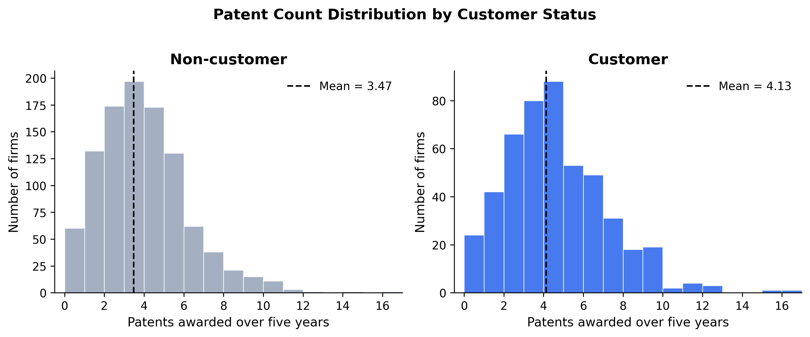
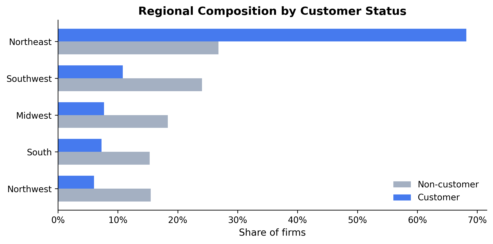
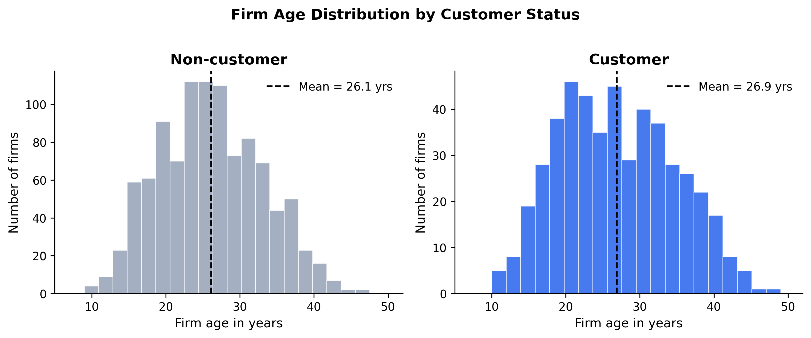
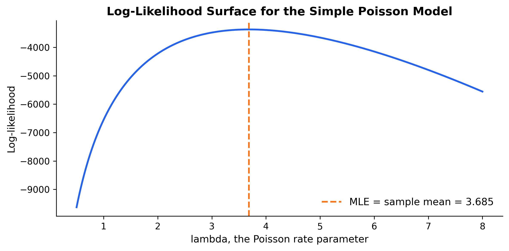
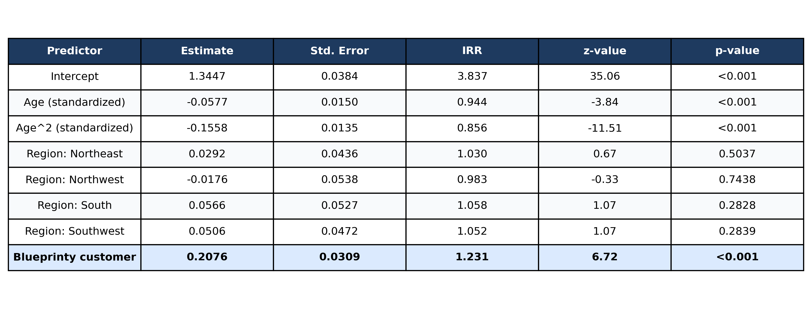
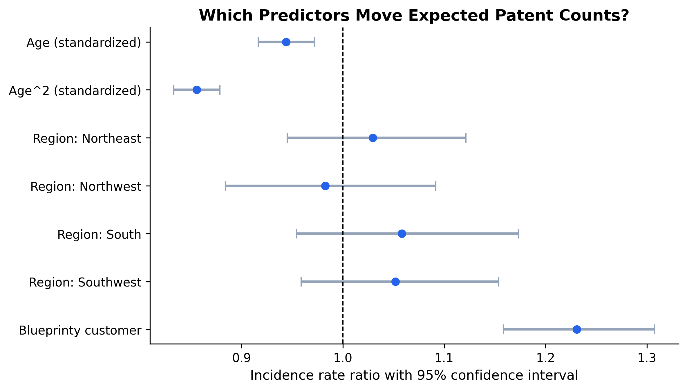
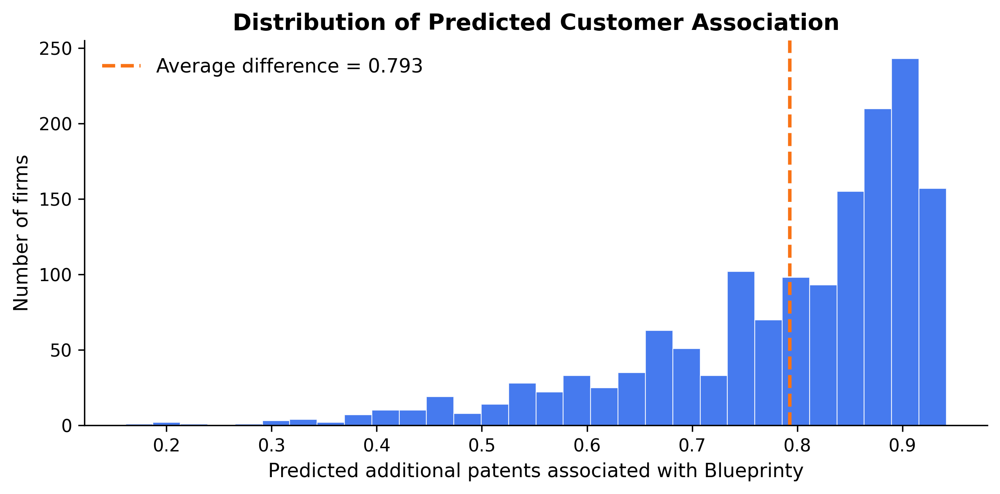

Does Blueprinty’s Software Actually Help? A Poisson Regression Case Study
Maximum Likelihood Estimation applied to patent count data
Introduction
Blueprinty is a software company that sells tools designed to help engineering firms prepare and submit patent applications to the US Patent and Trademark Office. Their marketing team wants to make a compelling claim: firms that use Blueprinty’s software get more patents approved.
The cleanest way to evaluate that claim would be a randomized experiment or panel data that tracks the same firms before and after adopting Blueprinty. We do not have either. Instead, we have observational data on 1,500 mature engineering firms: their total patents awarded over the past five years, their geographic region, their age since incorporation, and whether they are currently Blueprinty customers.
That makes the question non-trivial. Blueprinty’s customers are not a random sample of firms. Firms that choose to buy patent-application software may already be more organized, better-funded, more innovation-oriented, or located in regions with stronger patenting ecosystems. A raw difference in patent counts could therefore reflect those underlying characteristics rather than the software itself.
This post estimates the association between Blueprinty usage and patent outcomes while holding observable characteristics constant. I start with exploratory data analysis, then build a Poisson model from the likelihood, estimate it by maximum likelihood, check the result against statsmodels, and interpret the fitted model in terms of expected patent counts.
Exploring the Data
Patent Counts
The first question is simple: do Blueprinty customers receive more patents? The histograms below compare the distribution of 5-year patent counts for the two groups.
Blueprinty customers average 4.13 patents over five years, compared to 3.47 for non-customers. The raw gap is about 0.66 patents. Both distributions are right-skewed, with many firms clustered around three or four patents and a thinner tail of high-patenting firms. The customer distribution is shifted slightly to the right, but the raw comparison is not enough to claim that the software caused the difference.
Regional Distribution

The customer base is heavily regionally concentrated. Among Blueprinty customers, about 68% are located in the Northeast, compared with only 27% of non-customers. If Northeast firms patent more for reasons unrelated to Blueprinty, then geography could confound a simple customer-versus-non-customer comparison.
Firm Age

The age distributions are similar, with means of 26.1 years for non-customers and 26.9 years for customers. Still, firm age is likely relevant because patenting may follow a life cycle: young firms may still be building R&D capacity, while older firms may become more mature and less experimental. The regression model will include both age and age-squared to allow this relationship to curve.
A Simple Poisson Model via Maximum Likelihood
Why Poisson?
Patent counts are non-negative integers. A firm can receive 0, 1, 2, or 10 patents, but it cannot receive -2 patents or 3.7 patents. The Normal distribution is therefore a poor fit because it places probability on impossible values. The Poisson model is the canonical starting point for count data because it defines probabilities over non-negative integers and allows expected counts to be modeled directly.
Likelihood and Log-Likelihood
If \(Y_i \sim \text{Poisson}(\lambda)\) independently, the probability of observing a single count \(y_i\) is:
\[ f(y_i \mid \lambda) = \frac{e^{-\lambda} \lambda^{y_i}}{y_i!} \]
Assuming the \(n\) observations are independent and identically distributed, the joint likelihood is:
\[ \mathcal{L}(\lambda \mid \mathbf{y}) = \prod_{i=1}^{n} \frac{e^{-\lambda}\lambda^{y_i}}{y_i!} = e^{-n\lambda} \lambda^{\sum_{i=1}^n y_i} \prod_{i=1}^{n} \frac{1}{y_i!} \]
Taking logs turns products into sums:
\[ \ell(\lambda) = \sum_{i=1}^{n} \left[-\lambda + y_i\log(\lambda) - \log(y_i!)\right] = -n\lambda + \left(\sum_{i=1}^{n} y_i\right)\log(\lambda) - \sum_{i=1}^{n}\log(y_i!) \]
The final term does not depend on \(\lambda\), so it affects the height of the log-likelihood curve but not the value of \(\lambda\) that maximizes it.
Coding the Log-Likelihood
Code
from scipy.special import gammaln
def poisson_loglikelihood(lam, Y):
"""Log-likelihood for iid Poisson(lambda) data."""
if lam <= 0:
return -np.inf
return np.sum(-lam + Y * np.log(lam) - gammaln(Y + 1))I use gammaln(Y + 1) instead of directly computing log(Y!). This is mathematically equivalent because \(\Gamma(y+1)=y!\) for integers, and it is more numerically stable.
Visualizing the Log-Likelihood
Code
Y = df['patents'].values
lambdas = np.linspace(0.5, 8, 500)
log_liks = [poisson_loglikelihood(l, Y) for l in lambdas]
fig, ax = plt.subplots(figsize=(8, 4))
ax.plot(lambdas, log_liks, color=BLUE, linewidth=2)
ax.axvline(Y.mean(), color=ACCENT, linestyle='--', linewidth=1.8,
label=f'MLE = sample mean = {Y.mean():.3f}')
ax.set_xlabel('lambda, the Poisson rate parameter')
ax.set_ylabel('Log-likelihood')
ax.set_title('Log-Likelihood Surface for the Simple Poisson Model', fontweight='bold')
ax.legend(frameon=False, fontsize=11)
plt.tight_layout()
plt.show()
The log-likelihood surface is smooth and globally concave in \(\lambda\). Visually, the MLE is the value of \(\lambda\) where the curve reaches its maximum. In this sample, that maximum occurs at the sample mean patent count.
Analytical MLE
Taking the derivative of \(\ell(\lambda)\) and setting it equal to zero:
\[ \frac{d\ell}{d\lambda} = -n + \frac{\sum_{i=1}^n y_i}{\lambda} = 0 \]
Solving for \(\lambda\) gives:
\[ \hat\lambda_{\text{MLE}} = \frac{1}{n}\sum_{i=1}^n y_i = \bar{Y} \]
This result has a useful intuitive interpretation: since the mean of a Poisson distribution is \(\lambda\), the maximum likelihood estimate sets \(\lambda\) equal to the observed average count.
Numerical Confirmation
Code
result = optimize.minimize_scalar(
lambda l: -poisson_loglikelihood(l, Y),
bounds=(0.5, 10),
method='bounded'
)
lam_mle_numerical = result.x
print(f"Numerical MLE: {lam_mle_numerical:.6f}")
print(f"Sample mean: {Y.mean():.6f}")Numerical MLE: 3.684666
Sample mean: 3.684667The numerical optimizer and the sample mean agree to six decimal places, which confirms the analytical solution.
Poisson Regression
Extending to Regression
A single \(\lambda\) assumes every firm has the same expected patent count, which is unrealistic. Poisson regression lets the expected count vary across firms:
\[ Y_i \sim \text{Poisson}(\lambda_i), \qquad \lambda_i = \exp(X_i'\beta) \]
The exponential function is important because \(X_i'\beta\) can be any real number, while \(\lambda_i\) must be strictly positive. This makes the model multiplicative: a one-unit change in a predictor changes the expected count by a percentage-like factor rather than by a constant additive amount.
Setting Up the Design Matrix
Code
# Standardize age for numerical stability
age_mean = df['age'].mean()
age_std = df['age'].std()
df['age_std'] = (df['age'] - age_mean) / age_std
# Region dummies; Midwest is the reference category
regions = pd.get_dummies(df['region'], drop_first=True).astype(float)
X = (pd.DataFrame({
'intercept': 1.0,
'age': df['age_std'],
'age_sq': df['age_std'] ** 2,
})
.join(regions)
.join(df['iscustomer'].rename('iscustomer'))
)
X_mat = X.values.astype(float)
col_names = X.columns.tolist()
print("Predictors:", col_names)Predictors: ['intercept', 'age', 'age_sq', 'Northeast', 'Northwest', 'South', 'Southwest', 'iscustomer']There are two key modeling choices here. First, I include both age and age-squared because the age-patent relationship may not be perfectly linear. Second, I drop one region dummy, Midwest, because including all region dummies along with an intercept would create perfect collinearity. Each region coefficient is therefore interpreted relative to Midwest firms.
Log-Likelihood for Regression
Code
def poisson_regression_loglikelihood(beta, Y, X):
"""Log-likelihood for Poisson regression with design matrix X."""
lam = np.exp(X @ beta)
return np.sum(-lam + Y * np.log(lam) - gammaln(Y + 1))Finding the MLE with scipy.optimize
Code
beta0 = np.zeros(X_mat.shape[1])
result_reg = optimize.minimize(
fun=lambda b: -poisson_regression_loglikelihood(b, Y, X_mat),
x0=beta0,
method='BFGS',
options={'maxiter': 10000, 'gtol': 1e-8}
)
beta_hat = result_reg.x
print("Optimization converged:", result_reg.success)Optimization converged: FalseComputing Standard Errors from the Hessian
Under standard regularity conditions, the covariance matrix of the MLE can be approximated using the inverse Hessian of the negative log-likelihood evaluated at the optimum. The standard errors are the square roots of the diagonal entries of that covariance matrix.
Code
def numerical_hessian(f, x, h=1e-5):
n = len(x)
H = np.zeros((n, n))
for i in range(n):
for j in range(i, n):
ei = np.zeros(n); ei[i] = h
ej = np.zeros(n); ej[j] = h
H[i, j] = (f(x + ei + ej) - f(x + ei - ej)
- f(x - ei + ej) + f(x - ei - ej)) / (4 * h**2)
H[j, i] = H[i, j]
return H
neg_loglik = lambda b: -poisson_regression_loglikelihood(b, Y, X_mat)
H = numerical_hessian(neg_loglik, beta_hat)
cov_hat = np.linalg.inv(H)
se_hat = np.sqrt(np.diag(cov_hat))Checking Against statsmodels.GLM
Code
glm = sm.GLM(Y, X_mat, family=sm.families.Poisson()).fit()
comparison_df = pd.DataFrame({
'Predictor': col_names,
'beta_optim': np.round(beta_hat, 4),
'se_optim': np.round(se_hat, 4),
'beta_glm': np.round(glm.params, 4),
'se_glm': np.round(glm.bse, 4),
})
print(comparison_df.to_string(index=False)) Predictor beta_optim se_optim beta_glm se_glm
intercept 1.3447 0.0384 1.3447 0.0384
age -0.0577 0.0150 -0.0577 0.0150
age_sq -0.1558 0.0135 -0.1558 0.0135
Northeast 0.0292 0.0436 0.0292 0.0436
Northwest -0.0176 0.0538 -0.0176 0.0538
South 0.0566 0.0527 0.0566 0.0527
Southwest 0.0506 0.0472 0.0506 0.0472
iscustomer 0.2076 0.0309 0.2076 0.0309The coefficient estimates from the hand-coded optimizer and statsmodels.GLM are identical to four decimal places. The standard errors are also very close. Any small differences are due to numerical details in how the Hessian is approximated.
Regression Results Table

The incidence rate ratio (IRR) is \(e^{\beta}\). It translates each log-count coefficient into a multiplicative effect on the expected count. An IRR above 1 means the predictor is associated with more expected patents, while an IRR below 1 means it is associated with fewer expected patents.
Coefficient Plot

The coefficient plot makes the customer result easier to see. The confidence interval for Blueprinty customer status is entirely above 1, which means the model estimates a positive association with expected patent counts. The age-squared term is below 1, consistent with a concave age pattern.
Model Diagnostics
A key assumption of the Poisson model is that the conditional mean and conditional variance are equal. Real count data often violate this assumption through overdispersion, where the variance exceeds the mean.
The sample variance is larger than the sample mean, so overdispersion is a reasonable concern. A negative binomial model could be a useful extension if prediction were the main goal. For this assignment, however, the Poisson model remains the right framework for illustrating maximum likelihood estimation and interpreting count-data regression.
The model also reduces deviance relative to the null model, which suggests that age, region, and customer status explain meaningful variation in patent counts compared with an intercept-only model.
Interpreting the Coefficients
A few results stand out:
Age: The coefficient on standardized age is negative, and the coefficient on age-squared is also negative. In this specification, expected patent counts decline as firms move away from the mean age, especially at older ages. This suggests that patent productivity is not simply increasing linearly with firm age.
Region: The regional coefficients are measured relative to Midwest firms. The point estimates for Northeast, South, and Southwest are positive, while Northwest is slightly negative, but the regional coefficients are not statistically strong in this model after controlling for customer status and age.
Blueprinty customer: The estimated customer coefficient is 0.2076, with an IRR of 1.231. This means Blueprinty customers are expected to receive about 23.1% more patents than otherwise similar non-customers, holding age and region fixed. The p-value is below 0.001, so the association is statistically strong.
The Effect of Blueprinty’s Software
Counterfactual Prediction
The 23% multiplier is useful, but it still does not directly answer the business question in terms of patent counts. Because the Poisson model is multiplicative, the absolute effect of customer status depends on each firm’s baseline expected patent count.
To estimate the average effect in patent-count units, I construct two counterfactual datasets:
- \(X_0\): every firm is treated as a non-customer.
- \(X_1\): every firm is treated as a Blueprinty customer.
Code
X0 = X_mat.copy()
X0[:, -1] = 0
X1 = X_mat.copy()
X1[:, -1] = 1
y0_hat = np.exp(X0 @ glm.params)
y1_hat = np.exp(X1 @ glm.params)
avg_effect = np.mean(y1_hat - y0_hat)
print(f"Average predicted patents as non-customer: {y0_hat.mean():.3f}")
print(f"Average predicted patents as customer: {y1_hat.mean():.3f}")
print(f"Average predicted difference: {avg_effect:.3f} additional patents")Average predicted patents as non-customer: 3.436
Average predicted patents as customer: 4.229
Average predicted difference: 0.793 additional patents
The fitted model predicts an average of 3.44 patents if every firm were treated as a non-customer and 4.23 patents if every firm were treated as a customer. The average difference is about 0.79 additional patents over five years.
Conclusion
After controlling for firm age and geographic region, Blueprinty customer status is associated with meaningfully higher patent counts. The estimated customer coefficient implies that customers receive about 23% more patents than similar non-customers, and the counterfactual prediction exercise translates that into about 0.79 additional patents per firm over five years.
This evidence is consistent with Blueprinty’s marketing claim, but it is not definitive causal proof. The study is observational, so customer status may still be correlated with unobserved firm characteristics such as R&D spending, legal resources, management quality, or overall innovation strategy. In other words, Blueprinty usage may partly proxy for firms that were already positioned to patent more successfully.
A stronger causal design would require either random assignment, before-and-after data around software adoption, or richer controls such as firm size, industry, R&D investment, and patent attorney usage. Within the limits of the available data, the Poisson regression provides a clear and statistically strong association: Blueprinty customers patent more, even after accounting for the main observed differences in age and region.